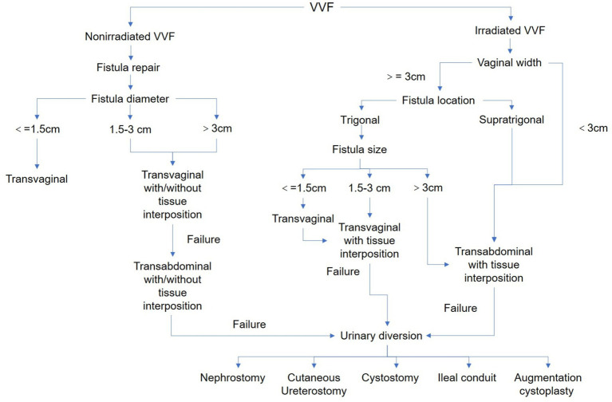
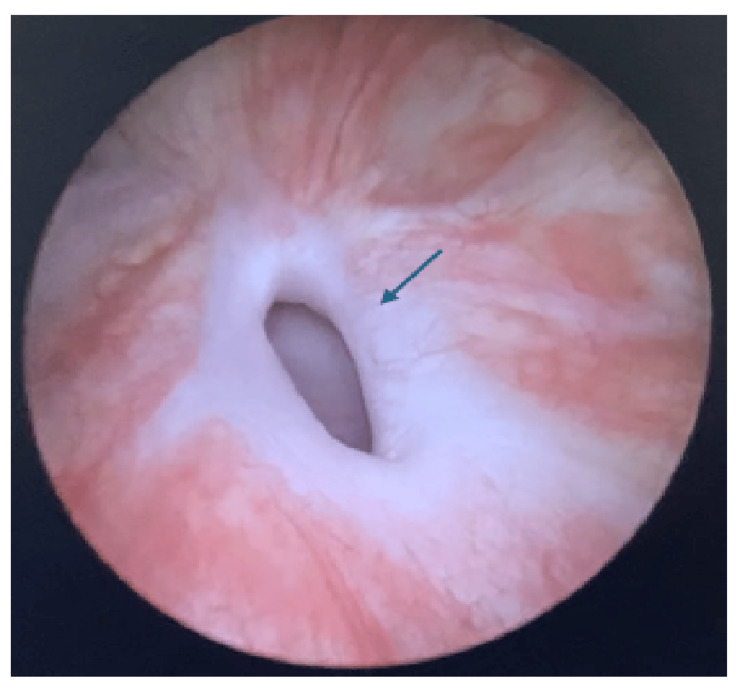
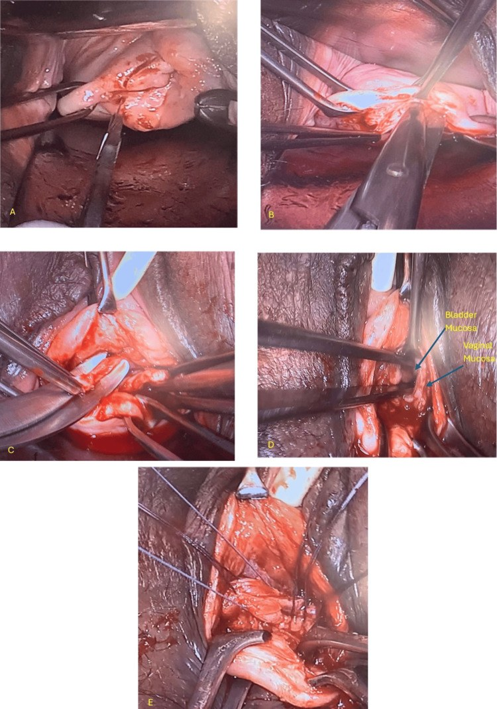

191 — Vá lại rò niệu–sinh dục THẤT BẠI: chọn lại đường mổ, vạt chen Martius, khi nào chuyển lưu nước tiểu
Tags: pattern:ro-nieu-sinh-duc pattern:ro-tai-phat vung:am-dao vung:bang-quang vung:khung-chau score:Goh protocol:CT-cystography protocol:MRI-chau protocol:vat-chen-Martius
Mức chắc chắn (certainty): tổng hợp y văn (literature synthesis) — tổng hợp 1 tổng quan hệ thống 21 nghiên cứu về yếu tố dự báo tái phát (2026), 1 đoàn hệ 64 ca chia nhóm có/không tia xạ có thuật toán xử trí (2026), 1 đoàn hệ tiến cứu 104 ca so sánh 3 đường mổ (2025), 1 đoàn hệ 78 ca (2026), 1 loạt trung tâm chuyên khoa 98 ca (2021) và 2 tổng quan kỹ thuật (2014, 2019). Không có ca nguyên văn riêng; số liệu đối chiếu PMCID trong sources.md.
1. Tổng quan bệnh học – cơ chế hình ảnh: vì sao vá lần đầu thất bại
- Tần suất nền: rò bàng quang–âm đạo (vesicovaginal fistula, VVF) sau cắt tử cung 0,8–1,0/1.000 phụ nữ; vá lần đầu thành công 80–95%, nên tái phát 10–30% là con số phải nằm lòng trước khi tư vấn (Faridi 2026, PMC13337442).
- Bốn yếu tố dự báo tái phát (gộp 21 nghiên cứu, 1994–2025): lỗ rò > 2–3 cm (OR 1,0–6,0); xơ quanh lỗ rò nặng (OR 2,7–12,0); liên quan niệu đạo và/hoặc cổ bàng quang (OR 0,4–9,0); nhiều lỗ rò (OR 4,0–8,0). Bảo vệ: can thiệp sớm, mổ ở trung tâm chuyên khoa, dùng vạt chen (interposition flap).
- Tia xạ là biến số nặng nhất: trong loạt 64 ca (44 ca có tia xạ, 20 ca không), tái phát sau vá 18,5% (đường âm đạo) và 50% (đường bụng) ở nhóm tia xạ, so với 6,25% và 0% ở nhóm không tia xạ; nhóm tia xạ chỉ 47,7% được vá, 29,5% phải chuyển lưu và 22,7% vá + chuyển lưu (Ni 2026, PMC13194451).
- Vị trí quyết định: rò tam giác thất bại 32% so với 6% ở ngoài tam giác (p = 0,004); rò sau cắt tử cung vẫn có tỉ lệ thành công cao nhất 95% (Wang 2026, PMC12924227).
- TẠI SAO vá lại thất bại — cơ chế mô học, không phải "tay nghề":
- Tia xạ và viêm mạn làm mô xơ hóa: collagen đặc, mạch máu thưa → thiếu oxy tại mép đường khâu → nguyên bào sợi không tạo được cầu nối, mép khâu hoại tử từng điểm.
- Xơ cũng làm mất đàn hồi: bàng quang co bóp tạo lực căng (tension) lên mối khâu → đường rò lại thường xuất hiện ở góc mối khâu cũ dưới dạng lỗ "pinpoint" rất nhỏ (Ghoniem 2014, PMC4434500).
- Vì vậy vá lần hai không thể chỉ khâu lại: cần cắt hết mô xơ tới niêm mạc lành + đưa mô có mạch máu tới (vạt) + giảm lực căng (đường mổ phù hợp).
- TẠI SAO hình ảnh trông như vậy (vật lý):
- Đường rò chỉ chứa đầy cản quang khi có áp lực trong bàng quang → phải bơm đầy bàng quang (retrograde) hoặc đọc thì muộn 15–60 phút của CT niệu đồ; chụp không bơm đầy dễ âm tính giả với lỗ < 5 mm.
- Xơ quanh lỗ là mô sợi đặc, nghèo nước → trên MRI T2W giảm tín hiệu, ngấm cản quang chậm và ít ở thì sớm; đây chính là dấu hiệu "mô nền không lành được" — tương ứng trực tiếp với OR tái phát 2,7–12,0.
2. Mẫu hình + chẩn đoán phân biệt theo vị trí (gamut)
Câu hỏi đầu tiên khi bệnh nhân còn rỉ nước tiểu sau một lần vá: đây có thật là "rò tái phát" không? Có 6 mẫu hình phải loại trừ trước khi mổ lại:
- A — Rò lại đúng vị trí cũ (tái phát thật): rỉ liên tục, ướt đều; sớm sau rút sonde (< 2 tuần) gợi ý kỹ thuật/thiếu máu mép khâu; xuất hiện muộn (tháng–năm) gợi ý tia xạ, xơ tiến triển, hoại tử mô.
- B — Rò "pinpoint" ở góc mối khâu cũ: lỗ < 5 mm, dễ âm tính trên cystogram; bệnh nhân ướt từng đợt theo tư thế; chỉ thấy khi soi bàng quang + xanh methylene.
- C — Rò niệu quản–âm đạo (ureterovaginal fistula, UVF) bị bỏ sót: bệnh nhân vẫn tiểu được mà vẫn rỉ; chiếm < 1% rò niệu sau cắt tử cung nhưng có thể đồng thời với VVF (Kothapalli 2025, PMC12449848) — bỏ sót là vá VVF xong vẫn ướt.
- D — Nhiều đường rò / rò thứ hai: OR tái phát 4,0–8,0; phải bơm cả hai bên và xoay bệnh nhân để tìm lỗ thứ hai ở thành trước/sau.
- E — Tiểu không kiểm soát do cơ thắt (stress urinary incontinence, SUI) sau vá: 22,5% bệnh nhân sau vá rò phức tạp bị SUI mới (13 ca phải mổ tiếp), rỉ khi gắng sức, không liên tục (Osman 2021, PMC8385280).
- F — Bàng quang tăng hoạt (overactive bladder, OAB) sau vá: 12,3% bị OAB mới, biểu hiện tiểu gấp, tiểu nhiều lần, không ướt liên tục — điều trị bằng kháng cholinergic, không mổ lại.
- Thêm hai thể dễ quên: rò bàng quang–tử cung (menuria, tiểu ra máu theo chu kỳ) và rò do lưới (mesh) sau đặt sling — phải lấy lưới trước, vá sau (thường chờ 6 tuần).
3. Bảng so sánh phân biệt (ma trận đối chiếu)
| Thực thể (entity) | Hình ảnh điển hình (soi/CT/MRI) | Chốt vào (rule-in) | Chốt loại (rule-out) | Gợi ý xác nhận |
|---|---|---|---|---|
| Rò tái phát tại chỗ | Lỗ tại vị trí mối khâu cũ, bờ xơ dày; CT cystography bơm đầy thấy đường nối bàng quang–vòm âm đạo | Rỉ liên tục + lỗ đúng vị trí vá cũ + bờ xơ | Rỉ chỉ khi gắng sức, test 3 bông âm → SUI | Soi bàng quang + xanh methylene; CT cystography |
| Rò pinpoint góc khâu | Lỗ < 5 mm, không thấy trên CT thường, chỉ thấy khi bơm căng | Ướt từng đợt theo tư thế + soi thấy lỗ nhỏ ở góc khâu | Cystogram âm không loại trừ | Soi bàng quang, xanh methylene, bơm qua sonde |
| UVF bỏ sót | Niệu quản giãn nhẹ, cản quang từ niệu quản vào vòm âm đạo ở thì muộn 15–60 phút | Vẫn tiểu được + rỉ liên tục + ứ nước nhẹ | Bàng quang chứa đủ cản quang, không thấy đường từ niệu quản | CT urography thì muộn; soi bàng quang tìm hai lỗ niệu quản |
| Nhiều đường rò | Hai lỗ ở thành trước/sau hoặc vòm; một lỗ thấy rõ, một lỗ kín khi bơm ít | OR tái phát 4,0–8,0; bơm thấy rò ở 2 vị trí | Chỉ một lỗ khi bơm đủ áp lực 2 tư thế | CT cystography bơm đầy; soi toàn bộ vòm |
| SUI sau vá | Không có đường rò; cổ bàng quang mở, sàn chậu yếu | Rỉ khi ho/gắng sức, test 3 bông âm, cystogram bình thường | Ướt liên tục cả ngày lẫn đêm → rò | Nghiệm pháp gắng sức; niệu động học |
| OAB sau vá | Bàng quang thành dày, không rò | Tiểu gấp, không ướt liên tục, cystogram sạch | Có đường rò trên cystography | Niệu động học; đáp ứng kháng cholinergic |
| Rò do lưới (mesh) | Bóng lưới cạnh niệu đạo, đường rò quanh lưới | Tiền sử sling + đau + rỉ sau mổ niệu đuôi | Không có vật liệu nhân tạo | MRI chậu (lưới = tín hiệu lạ), soi niệu đạo |

Thuật toán thực dụng của loạt 64 ca: nhóm không tia xạ đi theo kích thước lỗ (≤ 1,5 cm → đường âm đạo; 1,5–3 cm → âm đạo ± vạt; > 3 cm → đường bụng ± vạt); nhóm tia xạ đi theo độ rộng âm đạo (≥ 3 cm mới vá được; < 3 cm → chuyển lưu nước tiểu). Nguồn: Ni J et al., Frontiers in Medicine 2026, CC BY 4.0.4. Protocol: đánh giá lại – chọn đường – vạt chen – chuyển lưu
- Bước 1 — Chẩn đoán lại đầy đủ (bắt buộc trước mọi lần vá thứ hai): soi bàng quang + soi âm đạo + test 3 bông (3-swab test) + xanh methylene; đánh giá toàn bộ đường niệu (bàng quang, hai niệu quản, thận) vì "vá thất bại phải được đánh giá lại toàn bộ trước khi mổ lần sau" (PMC4434500). Bổ sung: CT cystography bơm đầy (hoặc CT urography thì muộn — xem bài 564) và MRI chậu khi tia xạ/lỗ lớn/nghi nhiều đường.
- Bước 2 — Chờ đúng lúc: với tia xạ, tránh mổ khi phản ứng xạ còn tiến triển — phản ứng xạ lành trong khoảng 1 năm, thực hành thường vá sau ≥ 6 tháng; với rò không tia xạ, để lớp viêm lắng xuống (thực hành ≥ 3 tháng). Trong loạt trung tâm chuyên khoa, trung vị thời gian từ khi có rò tới khi vá là 12 tháng (IQR 6–12) — bằng chứng cho thấy "chờ" không làm mất cơ hội (PMC8385280).
- Bước 3 — Chọn đường mổ theo thuật toán (ảnh mục 3):
- Không tia xạ: lỗ ≤ 1,5 cm → đường âm đạo; 1,5–3 cm → âm đạo ± vạt; > 3 cm → đường bụng ± vạt.
- Có tia xạ: xét độ rộng âm đạo trước tiên — ≥ 3 cm mới đủ chỗ vá (tam giác → theo kích thước; trên tam giác → đường bụng + vạt); < 3 cm → chuyển lưu nước tiểu (29,5% nhóm tia xạ trong loạt).
- Bước 4 — Vạt chen (interposition): chọn theo đường mổ — vạt mỡ môi lớn Martius (cuống mạch từ động mạch màng niệu đạo trong/internal pudendal) cho đường âm đạo; mạc nối lớn (omental J-flap) hoặc vạt phúc mạc cho đường bụng; một số chọn mỡ quanh trực tràng khi đường bụng - nội soi. Số liệu: dùng vạt ở 96/98 ca (98%) ở loạt chuyên khoa; Gousse: 100% khô khi có vạt so với 63% khi không có; Pshak: 49 ca (25 ca đã vá thất bại) vá đường âm đạo đạt 100% dù không dùng vạt (Rajaian 2019, PMC6792412).
- Bước 5 — Kết quả nên tư vấn: trung tâm chuyên khoa đạt khô vĩnh viễn 96% dù 31,7% bệnh nhân đã vá thất bại nơi khác và 41,8% là rò phức tạp (tia xạ, nhiều lần vá); 2% còn rò sau mổ, 2% tái phát > 2 năm (PMC8385280).
- Bước 6 — Theo dõi sau vá: sonde niệu đạo 10–14 ngày + kháng cholinergic giảm co thắt; cystogram 2–4 tuần: trong loạt 78 ca vá VVF, 3/78 (3,9%) còn rò trên phim đầu và 1 ca tự kín khi chụp lại sau 1–2 tuần — nên chụp lại trước khi kết luận thất bại. Lưu ý có tranh luận: tổng quan 2019 cho rằng cystogram sau vá "không bắt buộc" ở ca đơn giản.
- Bước 7 — Chuyển lưu nước tiểu (khi vá không còn khả thi): các lựa chọn trong thuật toán gồm dẫn lưu thận qua da (nephrostomy), dẫn lưu niệu quản ra da (cutaneous ureterostomy), mở bàng quang ra da (cystostomy), ruột non dẫn lưu (ileal conduit), tăng dung tích bàng quang (augmentation cystoplasty). Chỉ định thực tế: tia xạ + âm đạo < 3 cm**, lỗ **> 3 cm đã vá thất bại nhiều lần, hoặc rò + hẹp niệu quản hai bên.
flowchart TD
A[Bệnh nhân còn rỉ nước tiểu sau vá] --> B{Test 3 bông + soi bàng quang}
B -->|Không có đường rò| C[SUI hoặc OAB sau vá - điều trị nội khoa]
B -->|Có đường rò| D{Có tiền sử tia xạ?}
D -->|Không| E{Kích thước lỗ}
E -->|≤ 1,5 cm| F[Vá đường âm đạo]
E -->|1,5-3 cm| G[Vá đường âm đạo ± vạt chen]
E -->|> 3 cm| H[Vá đường bụng ± vạt chen]
D -->|Có| I{Độ rộng âm đạo}
I -->|≥ 3 cm, tam giác| J[Vá đường âm đạo + vạt]
I -->|≥ 3 cm, trên tam giác| K[Vá đường bụng + vạt]
I -->|< 3 cm| L[Chuyển lưu nước tiểu]
F --> M[Cystogram 2-4 tuần]
G --> M
H --> M
J --> M
K --> M
M -->|Còn rò, chụp lại 1-2 tuần| M
M -->|Rò tồn tại| L
5. Biến thể bình thường và cạm bẫy
- "Rò" trên cystogram 2–4 tuần có thể tự kín: 1/3 ca còn rò trên phim đầu đã kín khi chụp lại 1–2 tuần (PMC8385280) → không mổ lại ngay dựa trên một phim.
- Tiểu không kiểm soát sau vá ≠ rò tái phát: SUI 22,5%, OAB 12,3% sau vá rò phức tạp; test 3 bông âm + cystogram sạch là chốt loại.
- Bỏ sót UVF đồng thời: bệnh nhân vẫn tiểu được là dấu hiệu cảnh báo (rò niệu quản), và < 1% rò sau cắt tử cung là UVF — nhưng khi có cả hai, vá xong VVF vẫn ướt.
- Vá trong phản ứng xạ: tái phát 50% ở đường bụng trong nhóm tia xạ — chờ ≥ 6 tháng, và dùng vạt nếu vẫn vá.
- Ép đường âm đạo khi âm đạo < 3 cm: không đủ ánh sáng và khoảng làm việc; thuật toán của loạt 64 ca chuyển thẳng sang chuyển lưu.
- Rò tam giác/niệu đạo: thất bại 32% (so với 6% ngoài tam giác) — luôn thêm vạt và cảnh báo nguy cơ tiểu không kiểm soát sau mổ.
- Bẫy "satisfaction of search": OR nhiều lỗ rò 4,0–8,0 — tìm thấy một lỗ không được dừng lại; bơm đủ áp lực và xoay bệnh nhân.
6. Tự lượng giá — Blind Quiz
Ca 1 — Nữ 38 tuổi, rỉ nước tiểu liên tục 3 năm sau cắt tử cung toàn phần vì u xơ; đã được vá 1 lần ở tuyến trước, thất bại sau 10 ngày.

- Câu hỏi: mô tả bờ lỗ rò? Vì sao bờ này dự báo vá lại dễ thất bại? Ba chẩn đoán phân biệt cần loại trừ trước mổ?
Bấm để hiện đáp án (findings + chẩn đoán)
- Dấu hiệu (findings): một lỗ rò ~10 mm ở vòm âm đạo, bờ dày, trắng, xơ (mũi tên) — không phải niêm mạc mềm bình thường.
- Chẩn đoán: VVF mạn, tái phát sau vá — bờ xơ = mô thiếu máu, không tạo được cầu nối lành; đây đúng là biến số "xơ quanh lỗ rò nặng, OR 2,7–12,0" của tổng quan 21 nghiên cứu.
- Phân biệt trước mổ: UVF bỏ sót (bệnh nhân còn tiểu được), lỗ rò thứ hai (OR 4,0–8,0), SUI/OAB sau vá (không có đường rò).
- Nguồn ảnh: Silva DO et al., Cureus 2026;18(6):e110195, CC BY 4.0 — ảnh nguyên bản, không chỉnh sửa.
Ca 2 — Cùng bệnh nhân, quyết định vá đường âm đạo và đưa thêm mô có mạch máu vào giữa bàng quang và âm đạo.

- Câu hỏi: (A)–(E) đang làm gì? Hai lớp niêm mạc nào phải khâu riêng? Vì sao phải cắt "tới niêm mạc lành"?
Bấm để hiện đáp án (findings + kỹ thuật)
- (A) rạch hình bầu dục quanh lỗ rò trên niêm mạc âm đạo; (B) cắt sâu toàn bộ đường rò bằng kéo Metzenbaum tới niêm mạc bàng quang lành; (C) bộc lộ và khâu riêng; (D) khâu hai lớp riêng biệt: niêm mạc bàng quang và niêm mạc âm đạo (mũi tên xanh); (E) đóng niêm mạc âm đạo trên vạt.
- Vì sao: mép khâu phải tựa trên mô có tưới máu; để lại mô xơ = mép khâu thiếu máu = rò lại ở góc khâu. Vạt Martius (mỡ môi lớn, cuống động mạch màng niệu đạo trong) mang mạch máu mới tới đường khâu.
- Số liệu bổ trợ: dùng vạt 96/98 ca ở loạt chuyên khoa; 100% khô khi có vạt so với 63% khi không (Gousse, dẫn qua PMC6792412).
- Nguồn ảnh: Silva DO et al., Cureus 2026;18(6):e110195, CC BY 4.0 — ảnh nguyên bản, không chỉnh sửa.
Ca 3 — Nữ 56 tuổi, ung thư cổ tử cung đã xạ trị 4 năm, rỉ nước tiểu liên tục; lỗ rò 3,5 cm, âm đạo hẹp còn 2 cm, đã vá 2 lần thất bại.
Bấm để hiện đáp án (quyết định)
- Đây là rò do tia xạ, lỗ lớn (> 3 cm), âm đạo < 3 cm, đã thất bại 2 lần → theo thuật toán: không cố vá nữa, chuyển lưu nước tiểu (dẫn lưu thận qua da / niệu quản ra da / mở bàng quang ra da / ileal conduit).
- Số liệu để tư vấn: nhóm tia xạ chỉ 47,7% vá được; 29,5% chuyển lưu, 22,7% vá + chuyển lưu; nếu vẫn vá đường bụng, tái phát 50% (PMC13194451).
- Nếu bệnh nhân tha thiết giữ bàng quang: chỉ cân nhắc vá đường âm đạo + vạt + mở bàng quang ra da vĩnh viễn — phương án này được báo cáo thành công cao trong loạt trên, nhưng là lựa chọn cá thể hóa, không phải chuẩn.
Bài liên quan chéo
- 564 – Rò bàng quang–âm đạo & rò niệu quản–âm đạo sau mổ phụ khoa (chẩn đoán lần đầu: 3 bông, CT urography thì muộn)
- 562 – Hẹp âm đạo sau xạ trị (cùng nền tia xạ, cùng vấn đề "âm đạo hẹp")
- 582 – Biến chứng tiêu hóa–niệu sau xạ trị phụ khoa
- 1608 – Ung thư niêm mạc thứ phát sau xạ trị tiểu khung
Ảnh
- Tên file:
191_slug_Modality_SourceID.jpg; nguồn + giấy phép từng ảnh trongimages/CREDITS.md. - Không dùng ảnh paywall (AuntMinnie) hay ảnh giấy phép mơ hồ.
Không dùng để chẩn đoán độc lập khi chưa có người hướng dẫn.